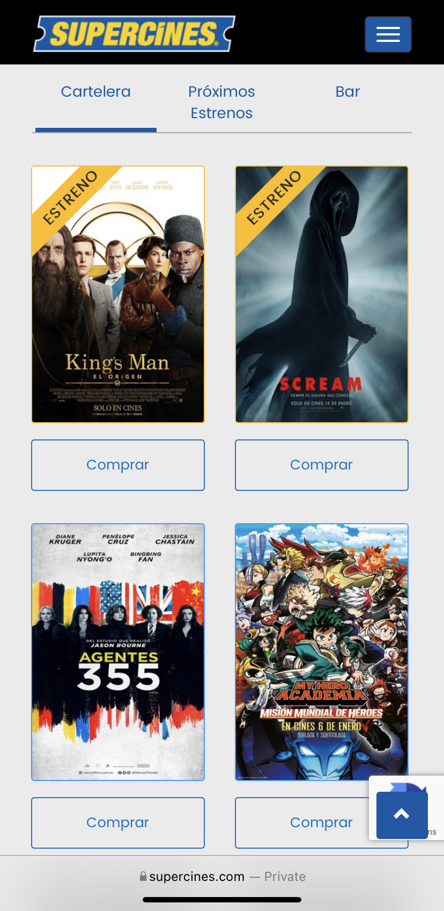

Design Principles
White Space and Clean Design
Apple
www.apple.comThere's so much white space that make the page look so clean! It has few text and big images that is the perfect example of this principle.
Contrast
Mercedes-Benz
www.mercedes-benz.comI love the contrast in this page. They figured it out on how to combine these two colors black and white and don't fail in their attempt.
Visual Hierarchy
Supercines
www.supercines.com On websites were you want to sell a product/service like this page it's very important the hierarchy. So on the top of the page they put the premiere movies first and then the others.